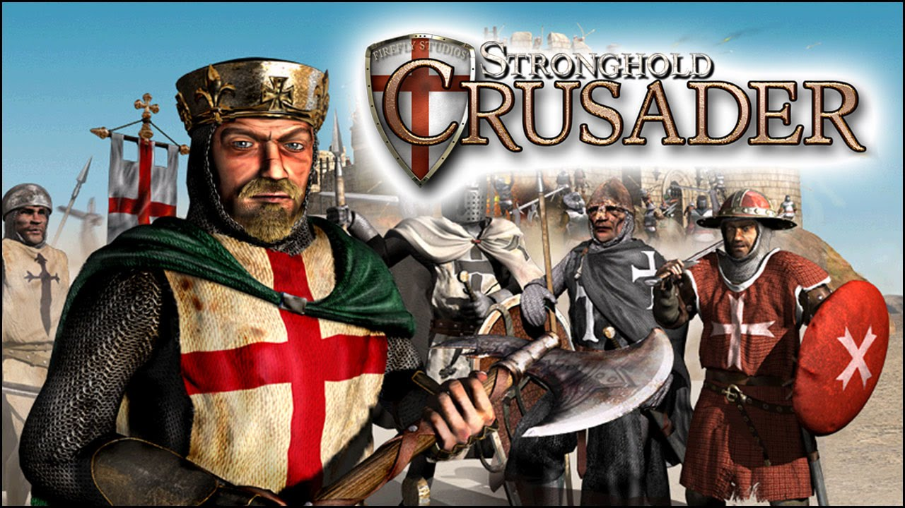
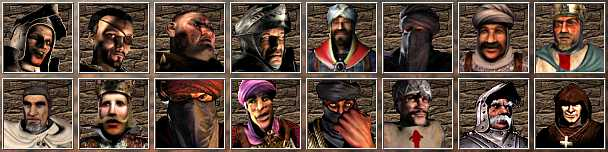
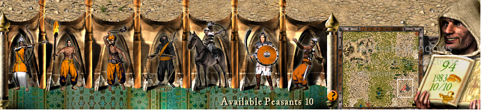
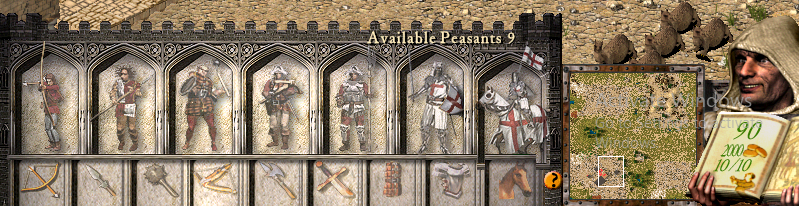
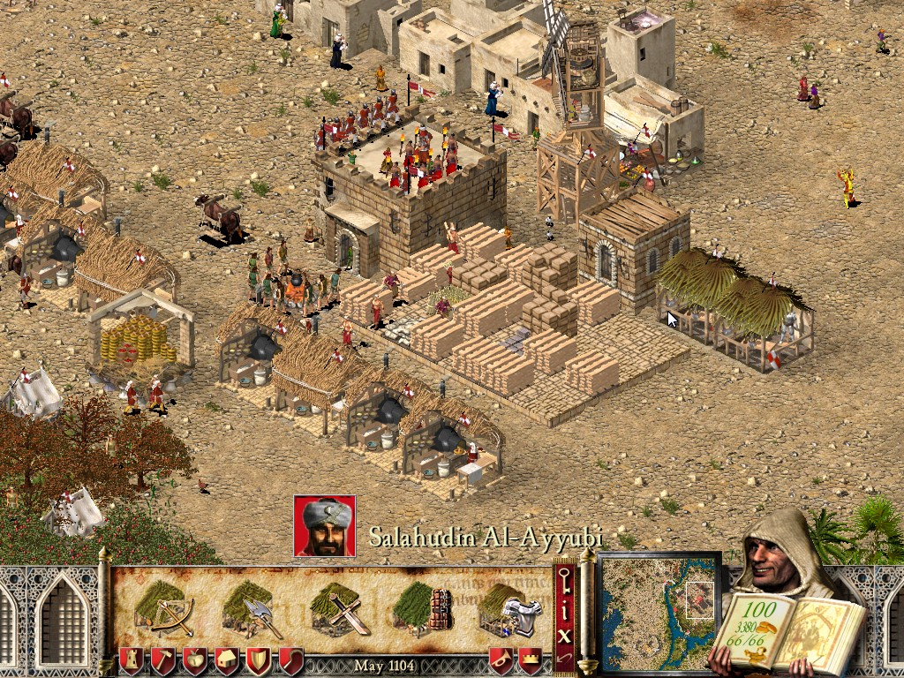

Review game : Stronghold Crusader

Stronghold Crusader game besutan Firefly Studio yang rilis pada tahun 2002, merupakan sebuah game Real Time Strategy ditambah dengan Economic Building dengan latar peradaban pertengahan
Tentang Game
Stronghold Crusader merupakan game sikuel dari game stronghold. game ini menyajikan ceria dari masa pertengahan yaitu dimana jaman kerajaan eropa mengisvasi arabia. karakter prajurit pun terdiri dari 2 jenis yaitu arab dan eropa. game yang direlis pada tahun 2002 menyajikan game Realtime Strategi (rts) secara baik. item symberdaya alam dan role terhadap perekonomiannya terbilang sangat baik karna setiap item mepengaruhi satu sama lain walaupun kaitanya tidak terlalu kuat namun dapat dikatakan cukup kompleks.
Designer
Designer Story
Stronghold memiliki tujuan cerita yang simple, yaitu membangun kerajaan dan mengalahkan kerajaan musuh. latar game ini diambil dari masa pertengahan. masa dimana sistem kerajaan berjaya dan kerajaan tersebutlah yang harus di kalahkan. Memiliki 12 karakter raja yang diambil dari sejarah di masa pertengahan di wilayah eropa dan arabia. Setiap karakter memiliki stategi dan tingkat ketulitan yang berbeda-beda. untuk mengalahkan kerajaan tersebut diperlukan banyak prajurit, setiap prajut dihasilkan dari penduduk dan dibeli dengan gold. prajurit yang tersedia merupakan prajuti asal arabia dan kerajaan timur tengah. setiap kerajaan mendapatkan jenis prajurit yang sama tanpa membedakan jenis kerajaan, namun setiap karakter memiliki pilihan tersendiri terhadap prajurit yang dihasilkan. selain prajurit ada beberapa karakter pelengkap yang digunakan untuk mengalahkan karakter musuh seperti enginer, tunel dan leader.

gambar 1: para Raja

gambar 2: Prajurit Arabia

gambar 2: Prajurit Eropa
Stronghold Crusader memiliki sistem ekonomic yang termasuk kompleks menurut saya. pertama ada sistem point yang menentukan tingkat kemakmuran suatu kerjaan pointnya berada di antar 0-100 dan 50 menjadi titik tengah jika point berada di bawah 50 maka kerajaan akan kehilangan penduduknya. kedua dalam game ini memiliki item sebagai sumberdaya alam yang digunakan sebagai ekonomiknya dan setiap item tersebut saling berhubungan satu dengan yang lain. seperti untuk menghasilkan makanan seperti roti diperlukan tempat pembuatan roti dan sebuah tepung, tepung dihasilkan dari tempat pembuat tepung dan gandum, gandum berasal dari pertanian. pertanian dibangun diatas lahan yang hijau, untuk membuat setiap bangun diperlukan sejumlah kayu kayu didapat dari para penebang kayu, para penebang kayu berasal tempat penebangan kayu dan pohon tentunya, dan agar dapat semua itu berjalan diperlukan 'orang' yang berasal dari penduduk agar dapat memiliki penduduk kerajaan harus memiliki point di atas 50 dan rumah. semakin banyak semakin banyak penduduk yang dihasilkan. sedangkan gold dihasilkan dari penjualan item-item tersebut di pasar dan gold digunakan untuk membuat suatu prajurit.

gambar 4: Stocpile
Graphic Stronghold Crusader masih berupa gambar dengan pixel yang besar karena game tersebut realise pada tahun 2002 yang dimana kualitas graphic tidak sebagus sekarang. namun, ada yang diunggulkan dari graphic yang disajikan yaitu detail dan ini menjadi nilai jual. sedangkan kelemahannya ada pada kamera yang statis kamera tidak dapat diputar secara bebas tapi per 90 derajat.
Play
Stronghold Crusader merupakan game rts yang setiap kali permainan atau misi tersendiri dan tidak berhubungan satu dengan yang lain. setiap pemain dapat menentukan karakter raja di Stronghold Crusader hanya ada 2 pilihan karakter yaitu raja dari arabia dan eropa, tapi pilihan tersebut tidak berpengaruh pada permain ataupun role-nya pemilihan karakter tersebut hanya berpengaruh pada raja yang akan ditampilkan di game. game ini menyajikan 3 cerita yang berbeda, Crusader, History dan Custom Scenario. crusader merupakan runtutan misi, history merupakan game yang di set berdasarkan kisah sejarah yang pernah terjadi sedangkan custom scenario pemain dapat mengatur dengan bebas setingan game yang akan dimainkan.
Stronghold Crusader menggabungkan antara stategi menyerang dan membangun ekonomi kerajaan, sehingga pemain harus mengatur agar kerajaan yang diabngun tidak hanya kuat tapi stabil. seperti yang sudah dijelaskan sebelumnya game ini memiliki banyak item-item yang digunakan sebagai sumber daya yang bertujuan untuk memajukan kerajaan. pemain akan dituntut untuk mengatur stategi agar saat diserang kerajaan lain tidak runtuh.
seperti yang sudah dijelaskan sebemnya game ini menyajikan gambar secara pixel yang besar, karena tahun realise 2002 yang graphicnya tidak senyata sekarang. sedangakan item yang ada dalam game di sajikan dengan jelas dan detail bahkan jumlah item jika dihitung jumlahnya sama dengan angka yang ditampilkan. dan untuk memilih item bangunan yang ingin dibangun game ini menyajikan gambar dari bangunan tersebut sehingga pemail langsung tau bangunan mana yang ini di bangun.
Experiece
game ini hanya berbasis kepada pengaturan strategi mengahlahkan kerajaan lain dengan sumber daya yang ada dan telah diolah. jadi pengalaman yang diberikan hanya merupakan sebuah tantangan bagi para pemain tanpa adanya kisah yang berkesan. sehingga game ini hanya dimainkan pada orang-orang yang bergenre rts
Kesimpulan
setiap game memiliki kelebihan dan keurangan masing-masing. stronghold crusader memiliki sistem perekonomian yang komplek namun dengan waktu yang terhenti, maksudnya tidak ada perkembangan seiring waktu keadaan akan sama terus menurus. namun yang menjadi unggulan disini adalah graphicnya yang menditail dalam menggambarkan setiap objek yang ada termasuk animasianya. namun yang menjadi keurangannya ada pada pengaturan kamera yang terbatas hanya bisa zoom di 150% dan kamera kanya memutar setiap 90% (tidak bebas). jadi dapat disimpulkan game ini baus bagi para pencita dan penikmat game rts